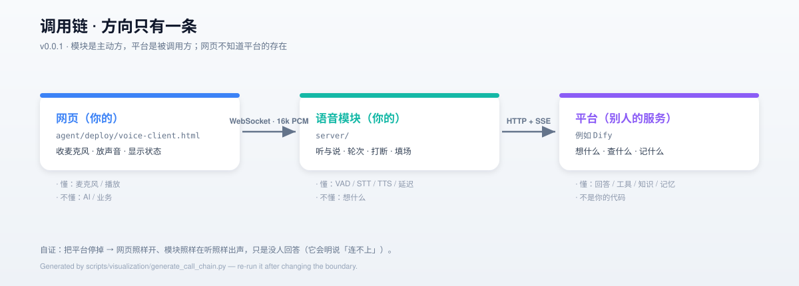
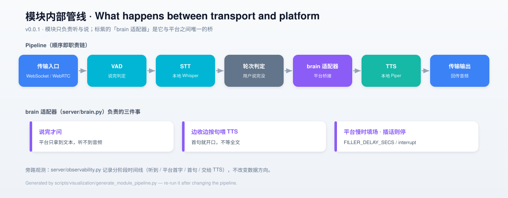

voice-module-dify
一个可以单独部署的语音模块：它只负责「听」和「说」， 思考交给一个已经存在的智能体系统。语音这一层归你，思考那一层归平台， 两边通过一个可替换的接口相连。
01 项目简介
它是什么、不是什么，以及凭什么值得单独存在。
它解决什么
把「语音对话」接到一个已经存在的智能体系统上：你说 → 它听懂 → 交给平台思考 → 它念出回答。 工具、知识库、记忆、编排都留在平台那边，你这边只需要能听会说。
它处理真正麻烦的部分
语音场景里最容易踩坑的不是模型，而是时机：判断用户说完没有、打断、 边收边说（首句就开口）、平台慢时填场 —— 全是网络往返带来的新问题。
与「自己做业务」的区别
这是同一目标的第三阶段：第一阶段把链路搭通、第二阶段往链路里灌业务， 第三阶段把语音链路做成 模块，插进别人已有的系统。
可自证
把平台停掉 → 网页照样开、模块照样在听照样出声，只是没人回答（它会明说「连不上」）。 这就是「模块是主动方、平台是被调用方」的证据。
02 架构全景
调用链只有一条方向；hover 节点查看说明。

docs/call-chain.svg
docs/module-pipeline.svg03 技术栈
全部取自 pyproject.toml 与 .env.example。
| 层 | 选型 | 说明 | 需要密钥 |
|---|---|---|---|
| 语言 | Python ≥ 3.12 | 用 uv 管理环境 | 否 |
| 框架 | pipecat-ai ≥ 1.12 | extras：whisper / piper / silero / webrtc / runner / websocket | 否 |
| STT | Whisper（本地） | 默认 base；显式中文 + 业务词提示词 | 否 |
| TTS | Piper（本地） | zh_CN-huayan-medium，首块数十毫秒 | 否 |
| VAD | Silero VAD | VAD_STOP_SECS=0.6 保住一整句中文 | 否 |
| 平台客户端 | httpx | HTTP + SSE 流式 + 叫停 | 是（唯一） |
| 配置 / 日志 | python-dotenv · loguru | .env 单一配置来源 | 否 |
| 测试 / Lint | pytest · ruff | 33 单测；ruff 规则 E/F/W/I/UP/B/C4/SIM/RUF | 否 |
04 能力与边界
"做什么"与"明确不做什么"同等重要 —— 后者是设计，不是遗漏。
✅ 做
- 听：VAD 判说完 + 本地 STT 转文字
- 说：本地 TTS，边收边按句喂（首句即开口）
- 轮流判定：平台听不到音频，这一步只能模块判（最值钱的部分）
- 打断：用户插话 → 本地停 + 告诉平台停 + 页面丢掉已排队音频
- 填场：平台慢时先说话，避免用户以为坏了
- 过程事件通道：思考 / 工具 / 节点 / 耗时实时推送页面
🚫 不做（有意）
- 工具（function calling）
- 知识库 / RAG
- 长期记忆
- 编排（多步流程）
- 模型训练（语音模型用本地的）
代码里也写死了这条边界：管线中刻意没有 assistant 聚合器 —— 没有本地 LLM 要聚合；两个脑子在一个管线里，是破坏这套设计最直接的方式。
05 评测结果
项目内实测数据（可复跑）。切换 Tab 查看不同维度。
| 节点（同一轮） | 相对「请求发出」 |
|---|---|
| 请求发出 | 0 ms |
| 平台首字 | 1334 ms |
| 首个完整句子 | 1346 ms |
| 交给 TTS（准备开口） | 1346 ms |
首字到开口只差 12 ms —— 「边收边按句喂 TTS」这套设计是有效的。数据来自模块日志的 [TURN n] 行。
| 口径 | 首字延迟 |
|---|---|
| 平台自身（绕开语音层） | 740–963 ms |
| 经模块（含音频到文本） | 1334 ms |
| 对比：本地 LLM（第一阶段） | ≈ 800 ms |
「接上平台会拖垮延迟」的担心在简单应用上不成立 —— 因为平台也是流式返回，其首字（740–963 ms）与本地 LLM 基本持平。
| 方案 | 单句耗时 | 更准？ |
|---|---|---|
Whisper base | 0.6 s | 基准 |
Whisper small | 1.6 s | ❌ 没变准（慢 2.7×） |
| base + 业务词提示词 | 0.55–0.66 s | ✅ 修好「保修期」 |
结论：先调提示词，别急着换大模型。把你会听到的词写进 STT_PROMPT 才是性价比最高的一刀。
06 快速开始
不用真平台：一个本地替身顶着，先听清模块本身的声音。
# 离线自测：不连真平台，用一个本地替身当脑子
cd voice-module-dify
uv sync
cp .env.example .env # 把 BRAIN_STUB 设成 1
uv run python probe/verify_brain.py # 验证"接脑袋"这条接口
uv run python probe/verify_speech_legs.py # 验证它真的能说、也能听
# 想听声音（两个终端）
uv run python server/ws_app.py --host 0.0.0.0 --port 8090
uv run python -m http.server 8081 --directory agent/deploy
# 浏览器打开 http://localhost:8081/voice-client.html接真平台
.env 两行：BRAIN_BASE_URL + BRAIN_API_KEY，BRAIN_STUB=0。
为什么经 http 打开
页面要拿麦克风，file:// 会被浏览器拒绝；经 http://localhost 才稳。
第一次会下载模型
Whisper + Piper（几百 MB），所以第一次慢、之后是秒级。
07 目录结构
点击展开/折叠；每个节点附带一句话说明。
server/ 语音模块本体（一个进程）
app.py管线装配：transport → STT → 轮次 → [brain] → TTS → transportws_app.pyWebSocket 入口（媒体走 TCP，能过任何 HTTP 端口转发）raw_pcm_serializer.py裸 16 位单声道 PCM 的收发约定（客户端契约）brain.py适配器：说完才问；边收边按句喂 TTS；平台慢时填场；插话则停agent_client.py平台客户端：HTTP + SSE 流式 + 叫停（换平台只改这里）settings.py唯一配置来源：语音插槽 + 平台地址observability.py分阶段时间线：听到 / 平台首字 / 首句 / 交给 TTS
agent/ 平台侧的东西
app.dsl.yml应用定义（一份文件就是一个应用，官方支持导入）import_app.py脚本化导入 + 建密钥（登录无法脚本化，文档标了边界）deploy/本环境专用部署件（烤进镜像的反代 + 出网代理 + 网页客户端）
probe/ 验证（都能量化，不是「看着像对」）
verify_assembly.py零件能不能装起来（不连客户端）verify_brain.py脑袋接口：流式 / 会话续接 / 失败可见 / 首句提前verify_speech_legs.py说 + 听两腿（合成语音存 WAV，再回读识别）verify_audio_e2e.py端到端音频（无浏览器）：进音频、出音频、留 WAV 可听stub_agent.py离线替身（不是真实平台，只用于自测）
tests/ · docs/ · scripts/ 测试 / 文档 / 可视化
tests/33 个秒级单测（不联网、不加载模型）docs/CONCEPTS.md心智模型与答疑（每条结论带验证方式）docs/PORTING.md换成你自己的平台：契约 + 清单docs/HANDBOOK-03.md阶段手册（已验证/未验证分开写）scripts/visualization/生成 docs/ 下 SVG 架构图
根目录文件
README.md项目入口CASE-dify.md接 Dify 的完整流程、必须人工的三步、实测踩坑case-run.sh一键脚本（能写死的都写死了）LICENSEMIT 许可证CONTRIBUTING.md/CHANGELOG.md/AUTHORS贡献指南 / 更新日志 / 作者
08 使用示例
代码全部摘自项目实际源码（server/app.py / server/settings.py）。
装配管线（server/app.py）—— 注意「刻意缺失」的两项
# 用户侧聚合器是唯一的；没有 assistant 聚合器，因为本地没有 LLM 要聚合 ——
# 对话归平台，它把成句的话交给模块去说。
context = LLMContext()
user_aggregator, _unused_assistant = LLMContextAggregatorPair(
context, user_params=LLMUserAggregatorParams(vad_analyzer=vad)
)
async with BrainClient(cfg.brain) as client:
brain = BrainProcessor(client, cfg.filler, speak_min_chars=cfg.voice.speak_min_chars)
pipeline = Pipeline(
[
transport.input(),
stt,
user_aggregator,
brain,
tts,
transport.output(),
]
)语音插槽（server/settings.py）
def build_stt(cfg: Config):
"""Speech -> text. Whisper locally; explicit Chinese + the configured prompt."""
settings = WhisperSTTService.Settings(
model=cfg.voice.whisper_model,
language=cfg.voice.stt_language,
initial_prompt=cfg.voice.stt_prompt, # 把业务词写进来，是最便宜的精度提升
)
return WhisperSTTService(settings=settings)接上你自己的平台（.env，只改两行）
BRAIN_BASE_URL=https://你的平台/v1 # 服务 API 的地址
BRAIN_API_KEY=app-xxxxxxxx # 应用的 API 密钥
BRAIN_STUB=0 # 0 = 接真平台可调项（每一项都带实测依据）
# 把你会听到的词写进来 —— 实测比换更大的模型更有效
STT_PROMPT=以下是普通话的句子。常见词：居中、保修期、日志、节点、耗时、语音模块。
# 多久算说完（0.6 保住一整句中文；0.2 会在第一个逗号处切断）
VAD_STOP_SECS=0.6
# 平台慢时的填场：多条用 | 分隔，随机挑一条；空则关闭
FILLER_TEXT=嗯，我看一下。|我看看啊。|稍等，我查一下。
FILLER_DELAY_SECS=1.1
# 攒够多少字再开口（0 = 第一句就说，延迟优先）
SPEAK_MIN_CHARS=009 测试与质量
每条结论都有一条能复跑的路径。
| 结论 | 怎么验 |
|---|---|
| 脑袋接口正确（流式 / 续接 / 失败可见 / 首句提前） | uv run python probe/verify_brain.py |
| 零件能装起来 | uv run python probe/verify_assembly.py |
| 它能说、也能听 | uv run python probe/verify_speech_legs.py |
| 端到端音频（含真实平台） | uv run python probe/verify_audio_e2e.py |
| 秒级单测 | uv run pytest |
| 回答真的来自平台 | 问它「你的内部代号是什么？」→ 应回答只写在平台提示词里的 VX-42 |
10 文档索引
按「我想做什么」挑一份读。
11 贡献指南
三条硬约束，其余见 CONTRIBUTING.md。
与前两阶段解耦
可以读它们的文档，但不要 import 模块或复制实现；只共用框架本身。
业务不在这里
工具 / 知识库 / 记忆 / 编排属于平台那一侧，本模块只负责听与说。
换平台只改一个文件
server/agent_client.py 是唯一的适配层。
12 许可证与作者
MIT License · Copyright (c) 2026 cnb.lpk —— 全文见 LICENSE。
本模块与前两阶段（pipecat-quickstart）是同一目标的第三阶段；语音模型为本地的 Whisper / Piper，思考由外部平台提供。